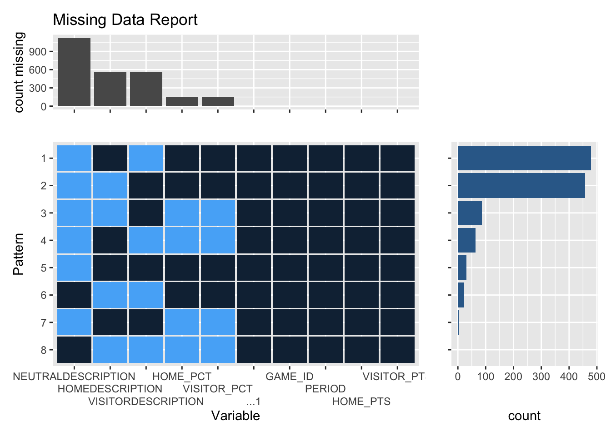
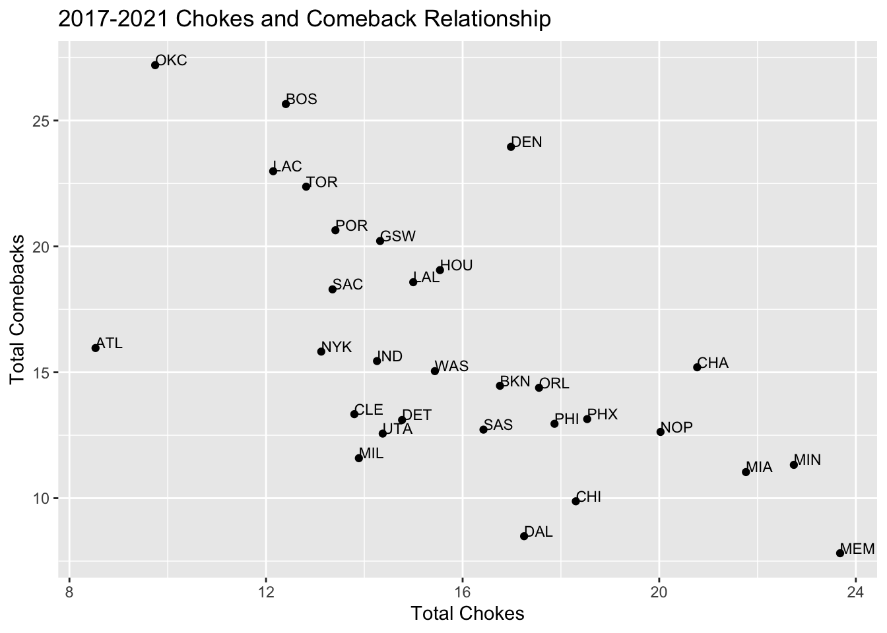
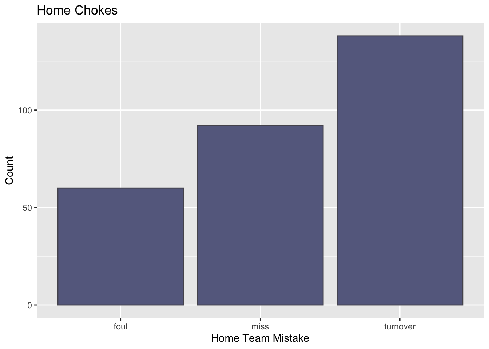

Chapter 5 Results
To begin our analysis, it seemed logical to first gain a sense of which teams have recorded the most total chokes, as well as comebacks over the last 4 seasons. As a result, we used a Cleveland Dot plot to display a ranking of these teams.
5.1 Total Chokes and Comebacks

It is interesting to note here initially the top 5 choke teams as: Memphis, Minnesota, Miami, New Orleans, Charlotte and the top 5 comeback teams as Oklahoma City, Boston, Denver, Toronto and Los Angeles. We will use these teams in a moment to further explore the possible relationships between high choke / comeback teams and other variables.
5.2 Choke and Comeback Relationship
Further, it should be noted that while there is an apparent negative relationship between a team’s number of chokes and comebacks, this relationship is not entirely mutually exclusive. The scatter plot below shows a pretty evident negative correlation between these two variables, which is to be expected.Nonetheless, this initial data visualization showed that it is possible that a team can lie in both categories. A team can be simply extremely volatile (or stable) once they have secured a 90% (or fallen to a 10%) win probability, however the direction of that volatility is not consistent. Although there is no overlap within the top 5 teams in each category, it would be useful to determine if certain teams are just extremely volatile in both direction, given a sizable lead or disadvantage.
Some interesting findings from this scatter plot is that there are indeed some teams with notable volatility (and stability) in their game play and this scatter plot has allowed us to identify some of these outliers.For instance, Charlotte, a team we already identified to be within the top 5 choke teams also has a sizable number of comebacks. Further, Denver, a team that ranked in the top 5 comeback teams, was also within the top half of choke-prone teams. As a result, these two teams stand out in that for both of them, they stand out, relative to the rest of the league, in that their games often result in improbable endings, for better and for worse. Atlanta also stands out in this plot in that they are a team with a very low level of chokes, relative to their number of comebacks. Therefore, it would be of interest to investigate further aspects of these teams that cause them to stand out as improbable ending prone teams. Additionally, it was not surprising to notice that the number 1 team in both chokes and comebacks, MEM and OKC respectively, both ranked among the lowest in their respective opposite category.
5.3 Home v. Visitor impact on Choke v. Comeback
Given these top teams in both choke and comeback categories, we wanted to investigate whether or not being the home vs. visitor team was a significant determinant of the outcome of the game. In the sports community, it is often known that home teams typically have a slight advantage, however, we wanted to investigate the nuances of this advantage at the choke/comeback level. For all teams across the league, we have produced mosaic plots to get a visual representation of this potential relationship. We split the league in half, by alphabetical order just to have the graph not be overly crowded and to view the relationship more clearly.

As we can see from the following two mosaic plots, some teams exhibit significant differences between their number of chokes and comebacks when they are home vs. when they are a visitor. What was most surprising from this visualization was that a vast majority of teams have a much higher comeback rate when they are a visitor. While most teams have this trend, teams such as DER and TOR show a strong positive relationship between them experiencing a comeback and being a visitor team. Perhaps a logical explanation for this finding is that home teams can do a better job of starting the game off strong, using the crowd and familiar environment to their advantage. As a result, many of the instances of comebacks for a team occur when they are a visitor, simply due to the fact that a home team has a better chance of gaining an early lead. On the flip side, for these same teams, they had much more chokes as home teams than as visitors. Along the same logic, this can likely be interpreted as home teams having the advantage of starting off a game very strong, but as a result, lends itself to the possibility of a choke in the latter part of the game. This finding was extremely curious to us since it caused us to question the true nature of having home-court advantage. However, given that this dataset is only considering the games that had a choke/comeback ending, this seemingly contradictory relationship is actually quite logical.
5.4 Reasons for Choke
Now, given that there is some explanatory connection between being home vs. away and the outcome of a team’s game, we wanted to leverage the play-by-play data to see the most frequent events in a game that resulted in a choke. This analysis would enable us to assign a single cause to a choke instance and then examine holistically which of these causes are most common, split by home chokes vs. away chokes. We decided that a fair metric to determine the single cause for a choke would be to identify the event with the maximum standardized frequency. As mentioned earlier, the main 3 mistakes that a team makes which leads them to a choke include: misses, fouls and turnovers. However, it would be naive to simply count the frequencies of these events in a choke and then assign the event with the largest count to be the explanatory mistake. This is because in a game, naturally some of these events will occur more often than others, regardless of the final game outcome. To fix this, we looked at the ratio of the counts of each mistake, relative to the total league averages. We obtained these league averages from this website. (https://www.basketball-reference.com/leagues/NBA_stats_per_game.html). Since we standardized the frequencies of each mistake to the average, we can then identify the mistakes that occurred at the largest multiple, against the league average. As an example, if the number of fouls in a game is around 10, if a team commits 20 fouls, it is likely that since they committed 2x of the league average, their abundance of fouls was the main contributor for their choke. We used a bar chart to display the distribution of games that has misses, fouls or turnovers as their main explanatory variable.


As we can see here, the clear leading cause for both home and away chokes are turnovers. Given that turnovers are the clear leading causes for chokes over the last 4 seasons, it would be of interest to investigate the turnover rates of specific players in the NBA, which will follow in our analysis. An additional interesting finding is that, for home chokes, misses are more frequent than fouls, but the opposite is true for away chokes. Therefore, fouls had a larger presence than misses for team to choke, when they are playing as a visitor.
5.5 Player Stat Heat Maps
Now that we have identified the teams with the highest chokes / comebacks, as well as the most frequent causes for these outcomes, it would be of interest to dive into some of the player-specific statistics. Given that fouls, misses, turnovers are all the cause of players’ specific actions, it would be of good use to visualize these, as well as other individual player-level statistics. This investigation would allow us to determine if, for high-choke teams, the main reasons for their unfortunate endings are the result of one specific player, or rather the team as a whole performing poorly in a specific category. The highest-choke team in our data set was found to be The Memphis Grizzlies, therefore, it would be interesting to further explore their individual players’ statistics. Symmetrically, we also wanted to visualize the individual player-level statistics of the highest comeback team, the Oklahoma City Thunder.
A natural way to express player-level data is in the form of a heat map, showing the average ranking of that player in that statistic, over the course of their career. Given that players are often moved around teams, there is no perfect system to determine their statistics, filtered down to only the games when they played for a specific team, however, we simply decided to look at the individual player statistics who were most frequently on that team during their chokes/comebacks. This seemed like the most logical approach to solve the issue of inconsistent rosters, since we are looking at the player career stats of individuals who played on frequently choke / comeback teams.

Heat plots of both team’s average player rankings in the following categories are:
ptsRank = overal points Ranking fgmRank = field goals made Ranking pctFGRank = fileld goal % ranking fg3mRank = 3 pointers made ranking trebRank = total rebound ranking tovRank = turnover ranking (lower ranking means more turnovers)
From the Memphis Grizzlies heatmap, we can clearly see that Ja Morant, their starting point guard ranks very high regarding total turnovers, which we found to be a leading cause in a team to choke. As a result, it is likely that his high turnover rate could be a contributor to the Grizzlies high choke rate. Morant ranks very high in turnovers according to his tovRank cell, and since turnovers are a negative stat, a higher rank indicates his costly mistakes. In addition to Morant’s high turnover rate, this visual also clearly shows that Anderson as well as Jackson rank relatively low with respect to a range of their offensive statistics. However, interestingly enough, Memphis, while still being the leading team for chokes, has some players (including Morant) rank pretty well regarding their overall shooting scoring and rebounding statistics (with the exception of Valanciunas and Gasol’s fg3mRank). This conclusion, while seemingly contradictory is actually quite intuitive. In order for a team to choke, they must have at some point in the game, been leading by a considerable amount. Therefore, Memphis should have pretty solid player statistics if they are able to consistently gain a sizable lead in a game. As a result, it makes sense that high-choke tendency teams, such as Memphis, happen to have players that rank pretty well regarding their offensive statistics. In order to juxtapose the player statistics of a high choke team to a high comeback team, we wanted to examine the same type of visual, however for the 5 players who had a large presence on the Oklahoma City Thunder, the most frequent comeback team from 2017 - 2021.
From OKC’s player statistics, we can see they have some extremely strong performers, relative to Memphis. This finding should be straightforward, since a high comeback team surely needs to have efficient offensive players on their roster. On this team, we can see very consistently strong offensive statistics (with the exception of Adams’ fg3mRank). Oklahoma City’s high level of comebacks can be interpreted very clearly here by their players demonstrating strong offensive performances.
While the heat map was able to confirm our initial thoughts on the performance of players on high comeback teams, it left us unstatisfied with its representation of high comback teams, such as Memphis. As mentioned, this misrelading representation stems from the fact that in order for a team to choke, they were capabable of initially gaining some sort of lead. Therefore, perhaps aggregate season-level data can begin to paint the picture of a choke-prone team, it is perhaps not most optimal method to identify if specific players are acting as significant contributors to a team’s choke or comeback.
5.6 League-Wide Game Split Data
Given that we are able to identify the specific moment in a game when a team begins to lose their lead and begin their choke, it would be valuable to visualize players points before and after the point of max win probability in the game. As a result, in our efforts to further investigate if we can identify choke-reasons at the player level, we managed to split our play-by-play data into before and after the choke turning point in a game. We define this turning point as the moment when the team who ended up choking had its highest overall win percentage. We wanted to initially look at the aggregate distributions of player scores before and after their team began to ‘choke.’ The overall distribution is as follows:
Clearly, from a league wide perspective, we can see a very notable drop off in the points scored for a player, after their point of max win probability. From this visual, we can see there is a significant peak at the value 0, meaning that a majority of players are scoring 0 points after this turning point in their choke games. However, what is interesting about this visual is that there is a bimodal shape the the ‘after turning point’ density curve, with an initial peak of 0 and then another one at around the ~2 point mark. As a result of this shape of the density curve, it caused us to question whether there are individual players who may be still performing well, while the rest of their team performs poorly. Givern that there is still a significant portion of players with non-zero scores after the turning point, perhaps there are certain players who still perform well after the turning point, yet it is their teammates who are dragging them down for a loss. As a result, we wanted to provide a similar visual of points scored before and after the choke turning point, however, on a player-specific level.